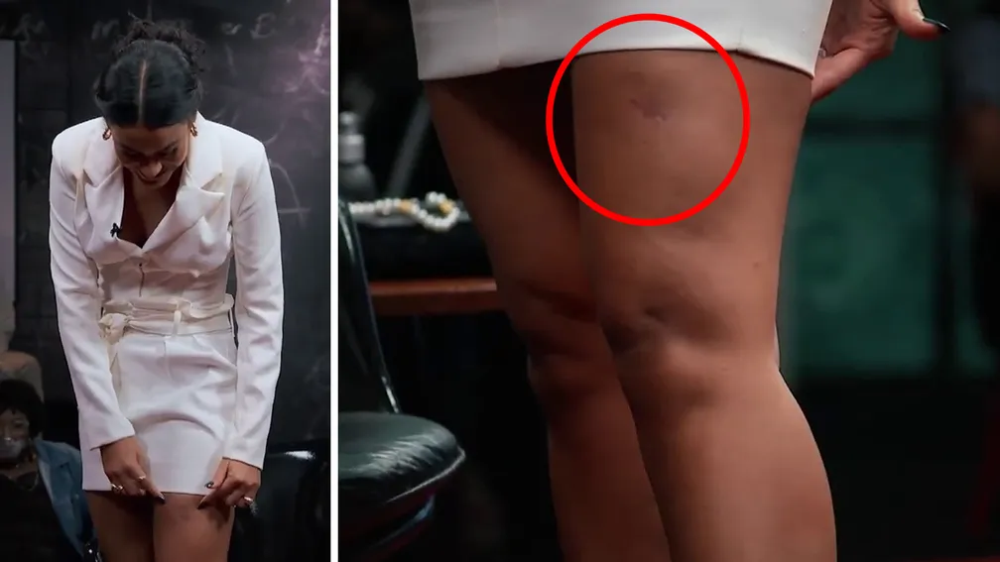

Bella Campos, atriz de 'Pantanal', revela ter sido mordida na perna por um jacaré
A atriz Bella Campos, que interpreta a Muda na novela "Pantanal", revelou que teve a perna mordida por um jacaré enquanto nadava no rio em um dia de folga. O relato foi feito no programa "Que história é essa, Porchat?", da GNT.
"Ele abriu toda a boca. Era muito grande. Um mega jacaré e ele abocanhou a minha perna", contou. A atriz diz que era por volta das 4 horas da tarde e decidiu dar um último mergulho antes de ir embora. Ao voltar para a margem sentiu uma pressão muito forte na perna. "Por instinto, eu dei um tapa. Tudo em um milésimo de segundo. Quando a minha mão bateu, eu senti que era um jacaré."
Ler mais
Funeral da Rainha Elizabeth II: a história da impressionante coroa sobre o caixão da monarca
O caixão da Rainha Elizabeth II está agora no Westminster Hall, após ter sido escoltado do Palácio de Buckingham pelo Rei Charles III, os Príncipes William e Harry e outros membros da realeza.
Em cima do caixão, está a Coroa Imperial do Estado, talvez o item mais conhecido das Joias da Coroa — uma coleção inestimável de dezenas de milhares de pedras preciosas reunidas ao longo de séculos por reis e rainhas britânicos.
Ler mais
Guilherme, da dupla com Hugo, dá bronca em fã após ser atingido por bebida durante show sertanejo em Barro Alto; vídeo
No vídeo, é possível ver que a dupla estava no meio da apresentação, quando Guilherme foi atingido por uma bebida jogada por uma mulher que estava na plateia. Na hora, o cantor pediu que os músicos parassem a música e, em seguida, pediu que retirassem a mulher do evento.
Na madrugada seguinte, a dupla compartilhou no Twitter um print de uma mensagem enviada por uma fã que conseguiu tirar uma foto com Guilherme após o fim do show, em Barro Alto. Na mensagem, a fã agradeceu por, mesmo depois da “situação chata” de terem jogado bebida no Guilherme, ela ter conseguido fazer uma foto com o cantor.
Ler mais